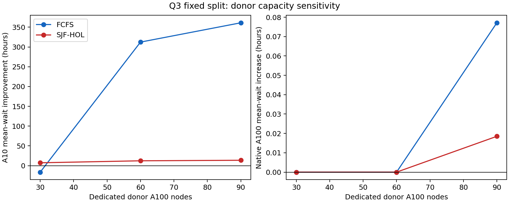

本章只使用已完成的 M0、S0、S1–S5；沒有新增排程情景。第一輪的 M1 統一稱為 S0。相容性與 σ 是情景假設，不是硬體 benchmark。
作業 j 的原生 GPU 型號為 nj，實際型號為 mj，原始時長為 pj，有效時長為 p′j = σjmpj，完成時間為 fj = sj + p′j，等待為 ωj = sj − aj。固定分區把按 node_name 排序的前 B 台 A100 專供外來 A10，其餘 A100 只服務原生 A100；worker 必須同節點滿足 CPU/GPU，全部同步啟動，不搶占、不遷移、不 fallback，且每一時刻逐節點容量不超額。
M0 是原始型號隔離；S0 是 60 台／10% 固定 SHA-256 分流／σ=1。S1–S5 每次只變更一個因素。所有比較使用 224,112 個原始 job ID；90 天窗口為 H=7,776,000 秒，窗口完成與完整排空分開計算。W=s−a，JCT=f−a，relative completion delay=f−a−p。
| Scenario | Policy | A10 mean wait (h) | A10 P95/P99 (h) | A10 mean JCT (h) | Native harmed | All mean JCT (h) | 90d done |
|---|---|---|---|---|---|---|---|
| M0 | FCFS | 900.129 | 1408.478/1419.616 | 999.898 | 0 | 523.961 | 165,107 |
| S0 | FCFS | 587.875 | 966.761/987.569 | 687.645 | 0 | 368.910 | 181,112 |
| S1 | FCFS | 702.551 | 1167.986/1188.658 | 802.320 | 0 | 425.853 | 174,693 |
| S2 | FCFS | 1010.136 | 4322.906/5345.115 | 1109.905 | 0 | 578.586 | 177,498 |
| S3 | FCFS | 916.407 | 4053.782/4423.899 | 1016.177 | 0 | 532.044 | 174,139 |
| S4 | FCFS | 539.109 | 958.246/985.841 | 638.878 | 5,735 | 344.723 | 184,339 |
| S5 | FCFS | 721.752 | 2292.733/2885.707 | 831.456 | 0 | 440.320 | 177,166 |
| M0 | SJF-HOL | 32.906 | 11.087/1542.181 | 132.676 | 0 | 93.353 | 217,570 |
| S0 | SJF-HOL | 20.534 | 12.691/639.532 | 120.303 | 0 | 87.209 | 217,814 |
| S1 | SJF-HOL | 25.328 | 7.745/1108.877 | 125.097 | 0 | 89.589 | 217,766 |
| S2 | SJF-HOL | 22.058 | 9.767/526.165 | 121.827 | 0 | 87.965 | 218,104 |
| S3 | SJF-HOL | 25.565 | 11.470/1025.261 | 125.334 | 0 | 89.707 | 217,762 |
| S4 | SJF-HOL | 19.214 | 5.205/611.002 | 118.984 | 2,150 | 86.560 | 217,945 |
| S5 | SJF-HOL | 25.106 | 12.125/1058.270 | 134.810 | 0 | 94.412 | 217,521 |
σ=1 的 S0 將 FCFS A10 平均等待由 900.129 小時降至 587.875 小時（34.7%），SJF-HOL 由 32.906 降至 20.534 小時（37.6%）。native A100 在 S0 的新增等待為零只適用於此 trace。
多分流不保證更好：FCFS 在 20% 時為 1010.136 小時，已高於 10% 與 M0；SJF-HOL 的平均、P99 與窗口完成數有不同取捨。30/60/90 台增加 donor 可降低 A10 平均等待，但 90 台產生 5,735/2,150 個 native A100 受損作業（FCFS/SJF-HOL）。

σ=2 時，FCFS A10 平均 JCT 由 999.898 變為 831.456 小時，仍優於 M0；SJF-HOL 由 132.676 變為 134.810 小時，略差於 M0。SJF-HOL 全體平均 JCT 由 93.353 變為 94.412 小時，90 天完成由 217,570 變為 217,521。因此等待與完成可能方向相反，不能插值或宣稱精確 σ*。
若政策要求本 trace 的 native A100 零新增等待，60 台／10% 是已測候選之一；若允許有限宿主代價，90 台仍應保留在取捨表。這些結果不證明全域最佳，也不代表動態共享、MIG、定價或 Q2×Q3 聯合排程。allocation 是請求資源占用，不是量測利用率；不同型號 GPU-hours 不可直接視為等效算力或金錢。